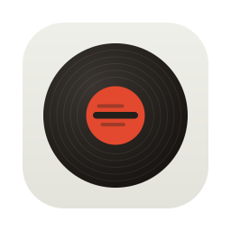

A small, free app that shows synced lyrics for whatever is playing on Spotify, floating on top of any window — from your code editor to your browser.
Intel Mac? Get this version. All versions on Releases.
On Windows, use Ctrl instead of ⌘ and Alt instead of ⌥.
.dmg and drag the app to Applications..exe installer.